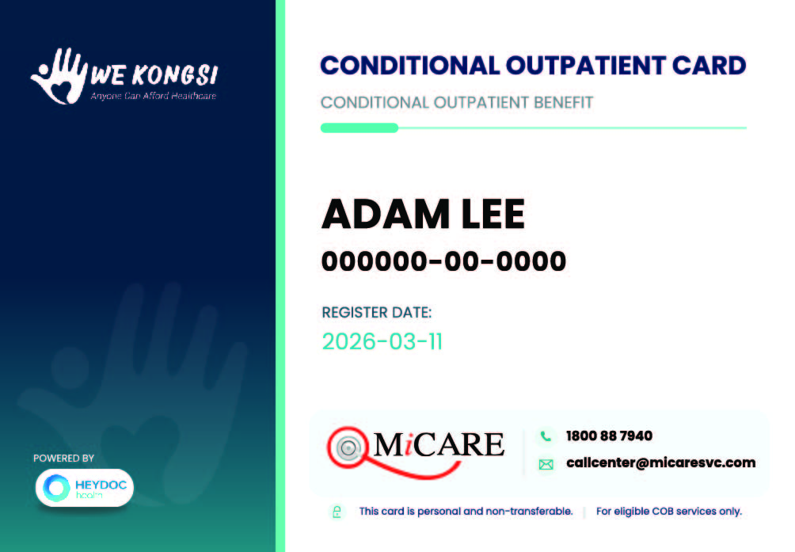
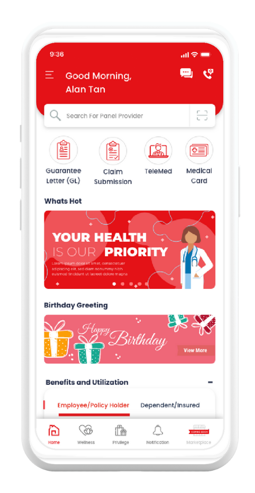

Up to 8 COB Episodes Per Year
Start with 2 episodes upon activation and receive additional episodes every quarter, up to 8 episodes annually.

Outpatient healthcare support for eligible WeKongsi members through teleconsultation, telemedicine support, and panel clinic visits.

COB is designed to help eligible members access timely healthcare support without unnecessary delays, making it easier to consult a doctor, obtain medication, and receive treatment when needed.
Start with 2 episodes upon activation and receive additional episodes every quarter, up to 8 episodes annually.
Speak to licensed HEYDOC doctors online and receive professional medical advice without leaving home.
Receive e-prescriptions and access telemedicine support through participating Alpro Pharmacy outlets.
Visit participating MiCare panel clinics nationwide for eligible outpatient conditions under COB.
Access healthcare support through three integrated services designed to help you consult, receive treatment, and obtain medication conveniently.

Feeling unwell? Consult a qualified HEYDOC doctor online from the comfort of your home. If medication is required, an e-prescription may be issued, allowing you to collect your medication at participating Alpro Pharmacy outlets or arrange home delivery.
Available daily 9am – 10pm. Speak to licensed HEYDOC doctors whenever medical advice is needed.
Consult licensed doctors comfortably in your preferred language.
Collect medication at participating Alpro Pharmacy outlets or arrange delivery (cut-off 5pm daily).
A simple 4-step process from consultation to telemedicine support.
Open MiCare TeleMed to start your consultation.
Speak with a licensed HEYDOC doctor online.
Receive a digital prescription if medication is needed.
Self-collect at Alpro Pharmacy or arrange delivery.

Visit participating MiCare panel clinics nationwide for eligible outpatient conditions under COB and receive support of up to RM120 per episode.

Access participating MiCare panel clinics across Malaysia.
Present your COB E-Card or NRIC during registration.
Support for eligible consultation and treatment costs.
Coverage applies to 17 approved outpatient conditions.
Clinic Visits applies only to approved outpatient conditions under COB.
Respiratory Tract Infection is eligible for members aged 15 years old and below only.

Your COB E-Card is available in the WeKongsi App and MiCare App. Simply show your COB E-Card or provide your NRIC during registration at participating MiCare panel clinics for eligibility verification.
New to COB? View the onboarding guide to learn how to access your COB E-Card, find panel clinics, and start using your benefits.
View Onboarding GuideA step-by-step onboarding guide to help you get started.

A simple journey from enrolment to activation.
Opt in to COB under your WeKongsi membership.
90-day waiting period begins.
Your Sharing Account contribution is collected.
Ensure sufficient balance is available.
Your COB is now active.
RM15 outpatient contribution is deducted from your Sharing Account and you can immediately use 2 COB episodes.
Access teleconsultation, telemedicine support, and clinic visits under COB.
Members receive outpatient episodes that can be used across teleconsultation and participating clinic visits.
Your COB healthcare benefits become available after the waiting period.
Start accessing COB healthcare support after activation.
Episodes are added quarterly while maintaining active eligibility.
Up to 8 outpatient episodes annually across covered healthcare services.
Follow-up care for the same medical condition within 7 days will generally be considered under the same episode.
A connected healthcare ecosystem powered by trusted partners to deliver outpatient healthcare support under COB.
WeKongsi remains your primary membership and healthcare benefit platform. COB eligibility, episode allocation, member support, and healthcare benefit access are managed within the WeKongsi ecosystem.
HEYDOC Health powers the healthcare services behind COB, including licensed doctor consultations, telemedicine services, and outpatient healthcare coordination.
MiCare provides the healthcare network infrastructure that supports COB services. Members use the MiCare MyMed application for teleconsultation access, e-prescriptions, e-card verification, and panel clinic connectivity.

Alpro Pharmacy supports medication fulfilment under COB. Prescribed medications may be collected from participating Alpro Pharmacy outlets or arranged for home delivery where available.
Detailed answers to common operational questions.
COB is available to WeKongsi members only who have opted into the Conditional Outpatient Benefit (COB) program and maintain active eligibility. Members contribute an additional monthly COB fee and must complete the required waiting period before benefits become available.
COB benefits become available after the 90-day waiting period has been completed. Once activated, eligible members will receive their first 2 episodes and may begin using teleconsultation and clinic visit services.
Example: Members enrolled in WeKongsi on 10th June 2026 will be entitled to COB benefits on 7th September.
An episode refers to one medical condition that requires consultation and treatment.
Each episode can be used through:
Eligible members receive:
Follow-up visits for the same medical condition are generally considered under the same episode if:
This helps members continue treatment without unnecessarily consuming additional episodes.
A new episode may be used when:
COB currently provides:
Members may:
Telemedicine support is available up to RM50 per episode. Medication delivery cut-off is 5pm daily.
Yes. Eligible members may access teleconsultation services an unlimited number of times during their active COB membership period, subject to operating hours.
Operating hours: 9am – 10pm daily.
Eligible members may visit participating MiCare panel clinics for approved outpatient conditions.
Clinic Visits covers:
Support is available up to RM120 per episode.
Clinic Visits applies only to the following approved diagnoses:
Coverage applies only to the diagnoses listed above. Final diagnosis is determined by the attending healthcare provider.
You may:
Passport verification is not supported for COB clinic visits.
You may present your e-medical card via the MyMed App or your NRIC and inform the provider that you are covered under "MiCare."
If the clinic or hospital is unable to verify your details, please request them to contact MiCare via the 24/7 toll-free number for assistance.
You may click "Forgot Password" on the front interface of the MyMed App.
WeKongsi
WeKongsi remains your primary membership platform and administrator. WeKongsi manages membership eligibility, enrollment, contributions, COB participation, and member support.
HEYDOC Health
HEYDOC Health powers the outpatient healthcare services under COB, including teleconsultation and healthcare coordination.
MiCare
MiCare provides the healthcare service platform used for COB. Through the MiCare MyMed App, members can access TeleMed services, view their COB e-card, and utilise participating panel clinics.
eMAS
eMAS remains WeKongsi's Third-Party Administrator (TPA) for inpatient healthcare support. eMAS continues to manage inpatient-related services and is not involved in COB outpatient services.
Yes. The eMAS platform remains available for inpatient healthcare services.
For COB outpatient services, members will use the MiCare MyMed App.
The MiCare MyMed App is required to:
Members will receive a welcome email from MiCare containing their User ID and password to access the MyMed Mobile App.
No. Personal information is provided by WeKongsi and cannot be edited directly within the application.
If your information is incorrect, members may contact WeKongsi Customer Service via WhatsApp at 010-876 8760 for assistance with amendments or updates.
Members can search participating MiCare panel clinics through:
Fixed Contribution: Enrolled members contribute a fixed RM15 per month specifically for outpatient services.
The RM15 COB fee is deducted separately from your Sharing Account every 30 days. The fee is charged monthly while your COB subscription remains active.
For new members:
For existing eligible members transitioning into COB:
Yes. COB fees are separate from your normal WeKongsi membership and Sharing Account contributions.
Your account status will change to Suspended and your healthcare benefits will be temporarily blocked.
You have 26 days to fix it: you are given a 26-day grace period to pay your outstanding dues and restore your active status.
Any amount exceeding RM120 per episode will be payable by the member.
Any amount exceeding RM50 per episode will be payable by the member.
Yes. Members are automatically enrolled in the Conditional Outpatient Benefits (COB) program upon signing up, but you have the flexibility to choose to opt out after enrollment, subject to the program's terms.
Yes, but a waiting period applies. If you decide to opt-in again, you must go through a 90-day waiting period before your outpatient benefits become active.
Please note that your monthly RM15 COB fee will still be deducted during this 90-day waiting period.
Reactivating your account means you are treated as completely opting out and opting in again.
If you rejoin after leaving, you are considered a completely new member and must follow the standard enrollment procedures.
Please contact WeKongsi:
WhatsApp: 010-876 8760
Email: info@wekongsi.com
Examples:
Please contact MiCare:
Call Centre: 1800-88-7940
Email: callcenter@micaresvc.com
Examples: